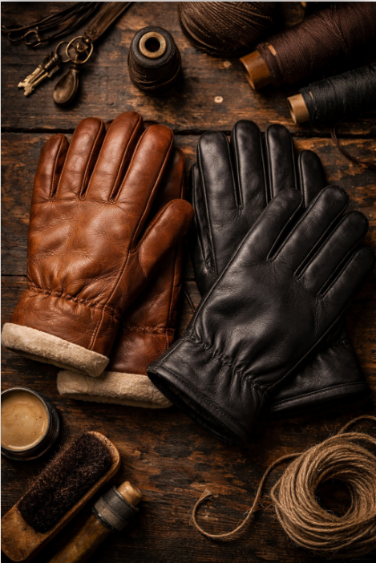

Bästsäljare
Bästsäljare
Nordic Gloves


Nordic Gloves
Vårt varumärke
Gjorda för nordiska vintrar
Nordic Gloves är ditt svenska märke för högkvalitativa och hållbara vantar. Vi kombinerar stil, komfort och funktion så att dina händer håller sig varma och skyddade – oavsett väder.
Våra produkter är noggrant designade för både vardag och utomhusaktiviteter, med material som är slitstarka och miljövänliga. Hos Nordic Gloves får du inte bara ett par vantar – utan ett löfte om kvalitet, komfort och långvarig användning.
Utforska alla produkter
Kollektion
Läderhandskar
Handgjorda i äkta skandinaviskt läder – tidlösa och mjuka redan från första användningen. Perfekta för pendlaren som vill ha stil och värme på samma gång.

Läderkollektion 2025


Teknik & Funktion
Gore-Tex Handskar
Vattentäta, vindtäta och ändå andningsbara. Gore-Tex-membranets teknologi håller händerna torra oavsett om det regnar, snöar eller blåser.
Gore-Tex kollektion 2025
Tradition & Värme
Ullvantar
Handstickade i finull och merinoull med klassiska nordiska mönster. Mjuka, naturliga och oerhört varma – dessa vantar ger en känsla av hemtrevnad mitt i vintermörkret.